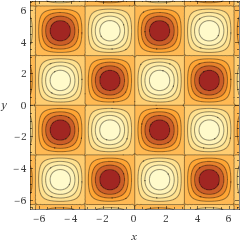

example.example
This namespace includes all features exposed by metadoc library.
What’s in:
- Code snippets
- Examples
- Tests from examples
- Constants
- Categorization
Categories
- With examples: cos-x-cos-y custom-example drawing-snippet-examples examples-with-tests function-with-custom-example sin-x-sin-y
- Without examples: function-in-some-category
Code snippets
Calculate integral value of some 2d function in ranges
(0, PI). This is example of the snippet.
(defn integral-snippet
[f params & opts]
(let [step 0.01
area (* step step)
r (range 0 pi step)]
(reduce (fn [curr [x y]] (+ curr (* area (f x y))))
0
(for [x r y r] [x y]))))Draws function values and saves to file.
(defn draw-trig
[f params & opts]
(let [unique-name (str (first opts) ".png")
canvas (BufferedImage. 200 200 BufferedImage/TYPE_INT_RGB)
graphics (.createGraphics canvas)
rect (Rectangle2D$Double.)
file (io/file (str "docs/" unique-name))]
(doto graphics
(.setBackground (Color. (int 48) (int 66) (int 106)))
(.clearRect 0 0 200 200)
(.setColor Color/white))
(dotimes [x 200]
(let [res (f (/ x 40.0))
y (- 200 (+ 10 (* 90.0 (inc res))))]
(.setFrame rect x y 2.5 2.5)
(.fill graphics rect)))
(.dispose graphics)
(ImageIO/write canvas "png" file)
unique-name))cos-x-cos-y
(cos-x-cos-y x y)Calculates cos(x) * cos(y).
Examples
Let’s calculate some values
(cos-x-cos-y 1.0 2.0)
;;=> -0.2248450953661529
(cos-x-cos-y 0.0 0.0)
;;=> 1.0
(cos-x-cos-y pi pi)
;;=> 1.0Plot of the function. Taken from WolframAlpha.
Calculate integral
(integral-snippet cos-x-cos-y ...)
;;=> 2.5365212358036414E-6custom-example
(custom-example t)Return custom example map with t as example value.
Examples
Custom Example value
(custom-example "nothing")
;;=> {:doc "Example documentation", :example "nothing", :type :custom}drawing-snippet-examples
(drawing-snippet-examples x)Draw some trig functions. Using example-snippet with result dispatched to :image type.
Examples
SIN
(draw-trig (fn [x] (Math/sin x)) ...)COS
(draw-trig (fn [x] (Math/cos x)) ...)TAN
(draw-trig (fn [x] (Math/tan x)) ...)This function
(draw-trig drawing-snippet-examples ...)examples-with-tests
(examples-with-tests)This function has examples with tests.
Examples
Testing against 121. Should be ok.
(* 11 11)
;;=> 121
;; Test: ok.Also testing against 121. Should fail..
(* 11 10)
;;=> 110
;; Test: failed, expected value: 121.function-in-some-category
(function-in-some-category x)Returns negative value od parameter x. This is function without examples.
function-with-custom-example
(function-with-custom-example)Dummy function with custom example.
Examples
Example documentation
Here is text of the example.
sin-x-sin-y
(sin-x-sin-y x y)Calculates sin(x) * sin(y).
Examples
Let’s check result.
(sin-x-sin-y 1.0 2.0)
;;=> 0.7651474012342926List of calls. Do not evaluate
(sin-x-sin-y 1.0 2.0)
(sin-x-sin-y 0.0 0.0)
(sin-x-sin-y pi pi)Do not evaluate, but test against 0.0.
(sin-x-sin-y 0.0 0.0)
;;=> 0.0
;; Test: ok.Calculate integral of
[0,pi]x[0,pi]range.
(integral-snippet sin-x-sin-y ...)
;;=> 3.9999601133324316